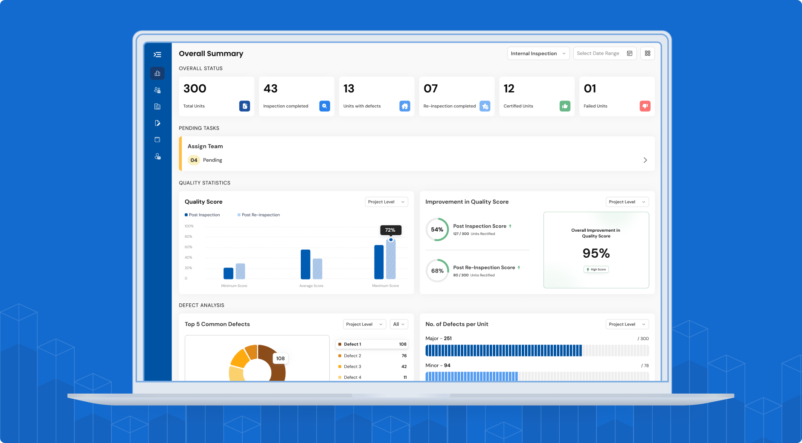
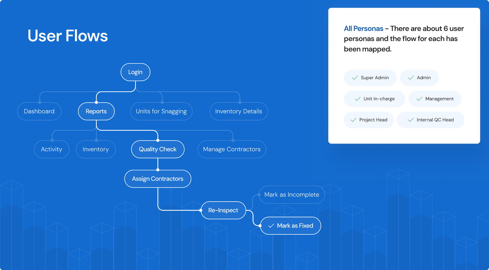
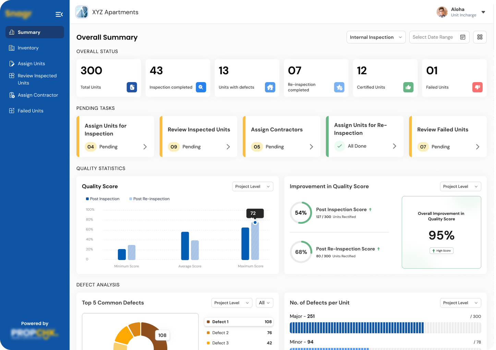
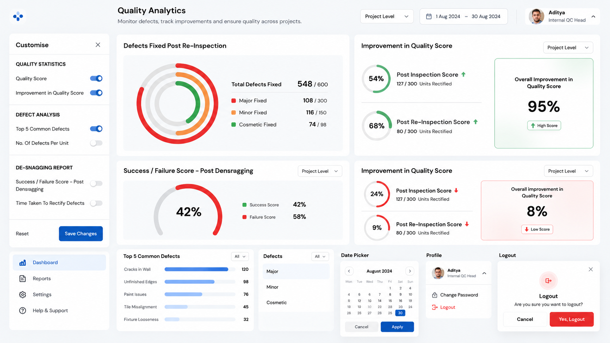
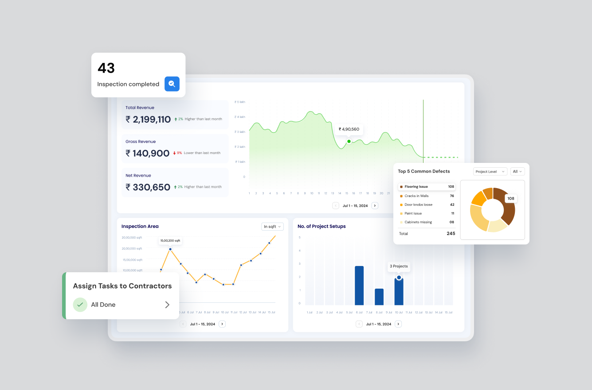

Same data.
Different decisions.
Turning a fragmented property-inspection platform into a coherent, role-based enterprise product.
Product name and selected details anonymized for confidentiality.
Overview of the product
SiteLens 2.0 is a B2B enterprise web application built for property inspection, construction quality management and QC operations. It brings project, unit, inspection, defect, contractor and quality information into one operational system.
What the product manages
Projects, units and inventory, inspections, defects, contractors, QC teams, quality checks, re-inspection and final status.
How the product works
Inspection teams capture quality information and evidence. That information then moves through review, assignment, rectification, re-inspection and QC validation.
Why the product was complex
Six web roles worked with the same underlying information, but each role needed a different view of what mattered, what required attention and what action came next.
Before designing the product, I had to understand the business.
The client already had a working product. It had grown one requirement at a time, but the interface had not evolved into a coherent operating model.
I spent roughly 1–1.5 weeks with stakeholders understanding the business, user responsibilities, roles and operational workflows before moving into the product audit.
The business operates around property inspection and construction quality. Site teams capture defects, dimensions, materials, evidence and quality checks. That information then moves through operational teams for review, assignment, rectification, re-inspection and QC validation.
Business goals
Operational efficiency
Reduce the effort required to create, assign, review and manage inspection work.
Faster defect resolution
Shorten the distance between identifying a defect and getting it assigned, rectified and validated.
Project visibility
Help management and project leads understand project health, failed units, defects and QC status.
Quality governance
Create a clearer trail from inspection through remediation, re-inspection and final validation.

Six web roles. One operational system.
The goal was not to create six separate experiences. It was to understand how each role interacted with the same operational data.
Discovery framework
Role → Responsibility → Information → Decision → Action → Next workflow
The product had information. It lacked structure.
The interface was functional, but the experience made users work too hard to understand what mattered to their responsibility.
- Information overloadEverything was shown to everyone, with limited role-based prioritization.
- Deep navigationKey questions such as “which unit failed, who owns it, has QC validated it?” required several hops.
- DuplicationThe same information appeared in multiple areas, blurring the source of truth.
- Weak hierarchyPrimary decisions and supporting details competed for attention.
- Role-blind structureSix roles shared a broad structure even though their responsibilities were different.
- Fragmented experienceIndividual features worked, but the product did not feel like one connected operational system.
Audit before pixels.
I deliberately held off the visual redesign. In an inherited enterprise product, restyling screens would have polished the fragmentation instead of fixing it.
01 — Screen & feature inventory
Reviewed the product surface to separate real capabilities from repeated functionality.
02 — Navigation mapping
Mapped deep paths and information that sat too far from the task.
03 — Duplication analysis
Identified overlapping areas and consolidation candidates.
04 — Role-to-screen mapping
Mapped which roles used which screens, and why.
05 — Stakeholder walkthroughs
Validated the original intent behind features so the redesign rested on business intent, not interface guesses.
06 — Workflow mapping
Reframed the analysis around responsibilities, decisions, actions and connected operational workflows.

Same data. Different decisions.
The obvious answer to six roles was six dashboards. The audit showed that would multiply maintenance and inconsistency.
Every role worked with shared entities: projects, units, inspections, defects, teams, contractors and QC status. What differed was the decision each role needed to make from that data.
The priorities could not.

One foundation. Different contexts.
I kept the interaction consistent where the work was common and adapted the experience where the decision was different.
Shared across roles
- Navigation patterns, tables, filters and cards.
- Status patterns and detail views.
- Interaction patterns and visual language.
- Reusable components and states.
Adapted per role
- Information priority and KPIs.
- Primary actions and permissions.
- Workflow and content hierarchy.
- Decision context and next actions.
Workflow over dashboards
I reframed the product around the operational lifecycle rather than a set of screens.
Decision-first dashboards
Each role's dashboard was structured around four questions:
- What is happening? Establish the current state.
- What needs my attention? Surface exceptions and risks.
- What should I investigate? Bring supporting detail closer.
- What do I do next? Make the next action clear.
Interaction model

Project Head: failed units first.
A Project Head needs to understand which units require attention. The redesigned experience brought that decision closer to the project overview and progressively exposed supporting detail.
Less navigation. Faster decisions.
The impact is framed around operational efficiency, navigation depth and decision speed. The figures below are case-study benchmark measures intended for later validation against production or usability data.
How success should be measured
North Star
Successful operational workflows completed — from inspection through defect resolution to QC validation.
Workflow conversion
Scheduled → Completed → Reviewed → Defect resolved → QC validated → Closed.
Efficiency
Time to review, time to rectify, time to close a defect, navigation depth and task completion time.
Usability
Task completion, discoverability, error rate and workflow abandonment.
AI as a design multiplier, not a decision maker.
AI helped accelerate synthesis, exploration and repetitive documentation. Product judgment remained grounded in business context, role responsibilities and stakeholder validation.
Audit synthesis
Clustered the screen and feature inventory into duplicates, overlaps, repeated patterns and consolidation candidates.
Role mapping
Converted stakeholder notes into an initial role × responsibility × information matrix and validated it against the product context.
IA exploration
Generated alternative navigation structures and workflow models to pressure-test information architecture before committing.
Workflow analysis
Challenged role journeys, missing states, unnecessary steps and edge cases.
Content & terminology
Explored clearer status names, dashboard labels, actions, empty states and supporting copy.
Documentation
Accelerated component usage notes, handoff annotations, UX rationale and repetitive documentation.
From information-heavy screens to an operational product.
Feature-by-feature screens
One structured product architecture
Same information for different roles
Role-based priorities across six web personas
Information-heavy dashboards
Decision-first dashboards
Repeated patterns
Reusable component foundation
Disconnected screens
Connected inspection-to-validation workflow
What I led as a Lead Product Designer.
Product strategy
Moved the conversation from screens and features to business workflows, responsibilities and decisions.
Information architecture
Reworked the product structure around a shared data model and role-specific decision contexts.
Role-based experience
Defined how six web personas should see, interpret and act on the same operational information.
Component strategy
Established reusable interaction patterns instead of designing isolated screens for each role.
Design direction
Created a shared mental model for stakeholders, designers and engineering to align on product decisions.
AI-assisted design
Used AI to accelerate synthesis and exploration while keeping product judgment human-led.
The work happened before the pixels.
The most important design decision was not a component, dashboard or interaction. It was recognizing that the product needed a clearer model of the business behind it.
By spending time with stakeholders first, mapping the six web personas and understanding responsibilities, I could see why a generic experience was failing.
The solution wasn't six separate products. It was one shared foundation that allowed different people to make different decisions from the same data.